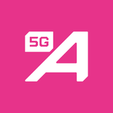
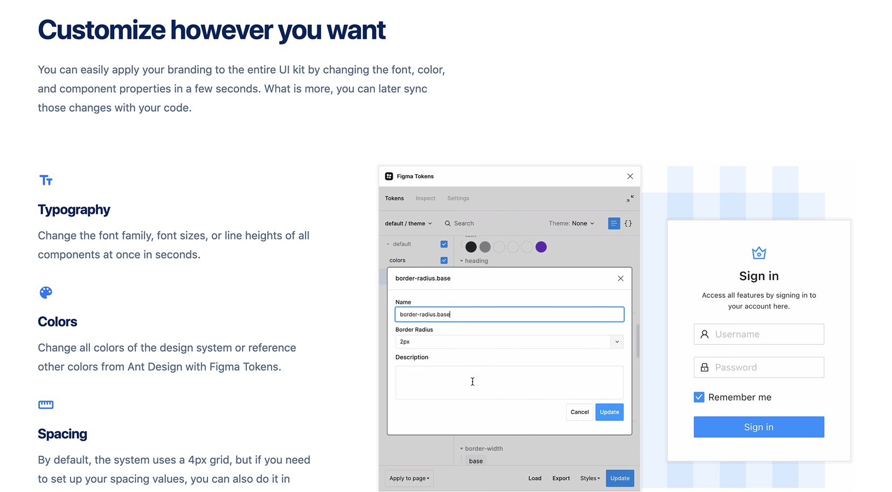
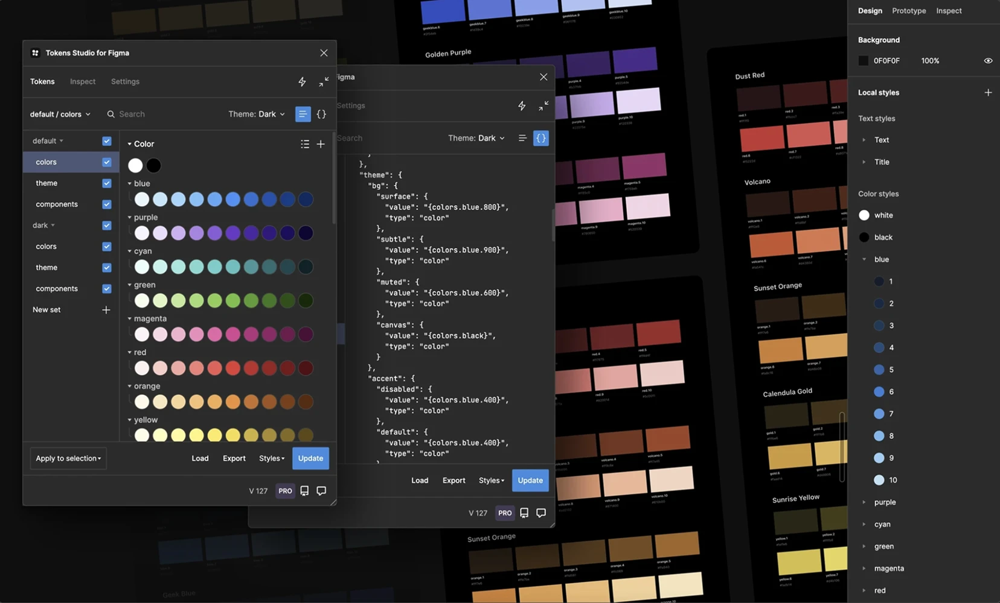
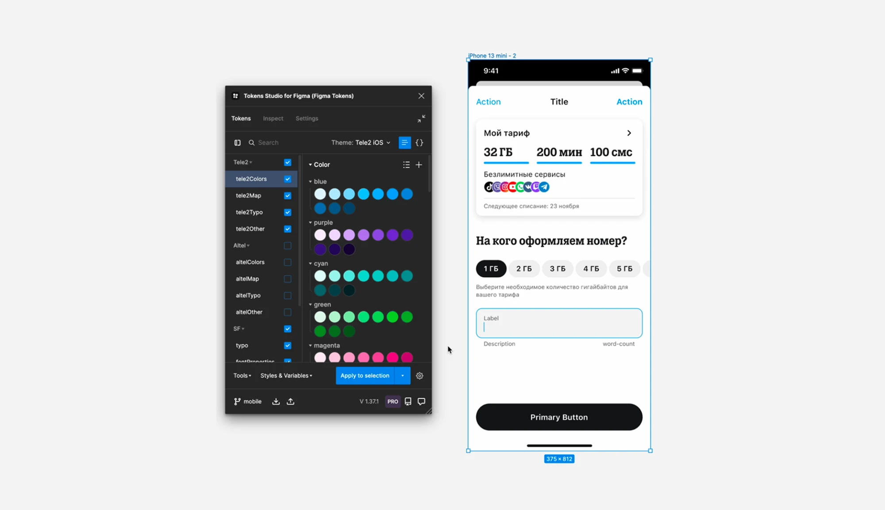
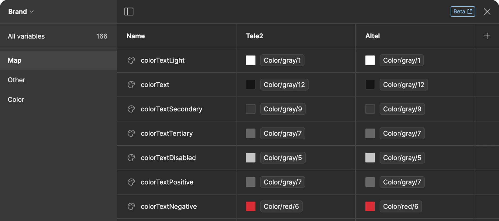
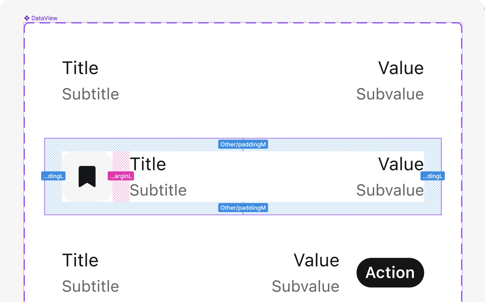

Дизайн-система на токенах
для Tele2 и Altel
Собрали одну библиотеку компонентов на дизайн-токенах, которая переключает интерфейс с одного бренда на другой в один клик — в дизайне и в коде.
- Компания


- Роль
- Product Designer
- Период
- 2022–2023
- Продукт
- Дизайн-система
Рассказывал об этом проекте на конференции UsabilityLab: смотреть доклад «Дизайн-токены: адаптация интерфейса под любой бренд»

Коротко
- Задача
- Tele2 и Altel вели дизайн и разработку для каждого бренда отдельно, а на Android пользователи видели iOS-компоненты.
- Что сделал
- Собрал библиотеку «Телепорт» на дизайн-токенах: основа токенов Ant Design, своя структура токенов для мобилки, нативные компоненты под iOS и Android, переменные Figma и Dev Mode.
- Результат
- Макет переключается на второй бренд в один клик. По грубой оценке, дизайн 20 экранов — ≈4 ч вместо ≈30, вёрстка — ≈50 ч вместо ≈200.
Контекст
Проблема
Altel и Tele2 объединились в одну компанию, но остались двумя брендами со своей аудиторией: в Altel — конструктор тарифа, в Tele2 — фиксированные тарифы с абонентской платой. Дизайн и разработку приходилось вести для каждого бренда отдельно.
При этом компания перешла с аутсорс-разработки на собственную и получила тяжёлое легаси:
- у компонентов не было вариантов — базовой гигиены дизайн-системы
- системные компоненты были только для iOS: на Android пользователи видели iOS-кнопки, навбары и модалки
- кроме хедера, компонентов почти не было — основные карточки лежали просто во фреймах
Цель
Ускорить изменения дизайна и в дизайне, и в разработке: поддерживать одну библиотеку компонентов для обоих брендов, а не дублировать её под каждый, и сделать интерфейс нативным на обеих платформах.
Моя роль
Инициатива дизайн-системы шла от дизайна. Вместе с фронтенд-разработчиками выбирал основу, внедрял Ant Design, проектировал структуру токенов для мобильной разработки и собирал библиотеку компонентов.
Решение
Основа — Ant Design 5
Вместе с фронтендерами сравнивали разные Storybook и Material и выбрали Ant Design. Для веба взяли его целиком, а для мобильного приложения — только основу его токенов:
- open-source и бесплатный, с большим сообществом
- в разработке даёт полную кастомизацию — под любые цвета и скругления
- в дизайне есть полный набор компонентов, синхронизированный с плагином токенов

Токены в Tokens Studio
В пятой версии Ant Design токенизация работает через плагин Tokens Studio для Figma. В нём хранятся все токены — цвета, шрифты, отступы, скругления, — и он переключает макет или целый флоу с одного бренда на другой или со светлой темы на тёмную.
Для разработки токены выгружаются кодом в репозиторий: разработчики забирают JSON-файлы и парсят их в проекте.

Структура токенов для мобилки
Сначала я принёс мобильным разработчикам JSON с токенами Ant Design — и они поругались на его структуру: она сделана под веб и неудобна для парсинга в мобильном приложении.
Тогда я сделал для мобильной разработки свою, упрощённую структуру из четырёх групп:
tele2Colors
tele2Map
tele2Typo
tele2Other

Для Altel структура полностью повторяется — меняются только значения. Системные шрифты вынесли в отдельные файлы SF и Roboto: в одном файле плагин не различал, где San Francisco, а где Roboto.
Почему палитра отдельно от семантики
Один и тот же цвет используется в разных местах. Без семантического слоя в tele2Map пришлось бы дублировать одинаковые цвета, а так компонент ссылается на смысл, а не на конкретный оттенок.
Нейминг
Отдельную многоуровневую систему нейминга не строили: взяли токены Ant Design и упростили структуру под мобильный парсинг. Цель — одинаковые названия токенов на вебе и в мобилке.
Нативно на каждой платформе
Вместо iOS-компонентов на Android решили делать интерфейс нативным под обе платформы, без единого кастомного вида и без нарушения платформенных паттернов: на iOS — Segmented Control, на Android — табы.
Библиотека «Телепорт»
Библиотеку назвали «Телепорт» — по созвучию с Tele2 и потому, что она телепортирует интерфейс с одного бренда на другой. В плагине меняешь тему «Tele2 iOS» на «Altel iOS» — и весь макет перестраивается под второй бренд. Флоу на 50 экранов переключается за секунду, в один клик.
Нативные переменные Figma и Dev Mode
Когда в Tokens Studio появилась синхронизация с нативными переменными Figma, мы перенесли токены в Variables одной кнопкой Sync. В коллекции Brand — 166 переменных в группах Map, Other и Color, а бренды Tele2 и Altel — это режимы одной коллекции: у одного и того же токена для каждого бренда своё значение.

Ограничение — в Variables нет шрифтов, поэтому задать брендам разные шрифты через переменные нельзя. Брендовые шрифты остались в Tokens Studio.
Dev Mode вместо техдокументации
Раньше на каждый компонент писали техническую документацию: какие токены в нём используются. С нативными переменными эту работу взял на себя Dev Mode — разработчик кликает на объект и сразу видит отступы, маргины и цвета с названиями токенов, например Other/paddingM или paddingL. Писать техдокументацию по токенам для каждого компонента мы перестали.

Итог
Результат
Продуктовых метрик нет: нулевой замер до внедрения никто не делал, поэтому ROI дизайн-системы посчитать нельзя. Но можно сравнить трудозатраты на реальном продукте — «Перенос номера», около 20 экранов. Это очень грубая оценка, без формул:
| Без дизайн-системы | С дизайн-системой на токенах | |
|---|---|---|
| Дизайн 20 экранов | ≈30 ч | ≈4 ч |
| Перерисовка под второй бренд | ≈4 ч | ≈10 мин |
| Вёрстка экранов на iOS и Android, без логики и бэкенда | ≈200 ч | ≈50 ч |
| Переключение бренда и проверка в разработке | — | ≈1 ч |
Что ещё это даёт
- Второй бренд получает готовый флоу быстрее: если продукт «взлетел» в одном бренде, дизайнер переключает тему и отдаёт его в разработку. Так случилось с покупкой и переносом номера: флоу взлетел в Tele2, его переключили на тему Altel и передали команде Altel. После релиза покупки нового номера в Altel выросли с 562 в ноябре до 2 969 в январе, а переносы — с 48 до 479. Подробнее — в кейсе «Покупка и перенос номера в приложении Tele2»
- Разработчик берёт JSON нужного бренда — и экраны перерисовываются в коде
- Появляется возможность дешёвых A/B-тестов между брендами: один бренд запускает базовую версию процесса, второй — с изменением. Культуры A/B-тестов пока нет, в связке с токенами их ещё не проводили
- Dev Mode заменил ручную техдокументацию по токенам
Минусы
У подхода есть цена, и её важно проговорить:
- Дизайн-долг: легаси-экраны, собранные на локальных компонентах команд, ещё предстоит перевести на новую систему
- Каждый компонент нужно собирать на токенах и постоянно применять их через плагин — «собрал и забыл» больше не работает
- Две структуры токенов — для веба на Ant Design и для мобилки. В идеале нужна одна структура и один источник правды
Что дальше
- Инструкция для дизайнеров по работе с плагином и применению токенов
- Плагин как источник правды: JSON-файлы уже заливаются в Git, цель — чтобы правка токена автоматически уходила разработчикам и попадала на прод
- Синхронизировать токены с backend-driven UI, который уже внедрён в одном из продуктов
Выводы
Самое важное в токенизации — нейминг и семантика цветов. Именно они определяют, будет ли одна библиотека работать для нескольких брендов или превратится в набор дублей.
И второй урок — делать нулевой замер до внедрения. Без него эффект дизайн-системы можно показать только грубой оценкой, а не цифрами.